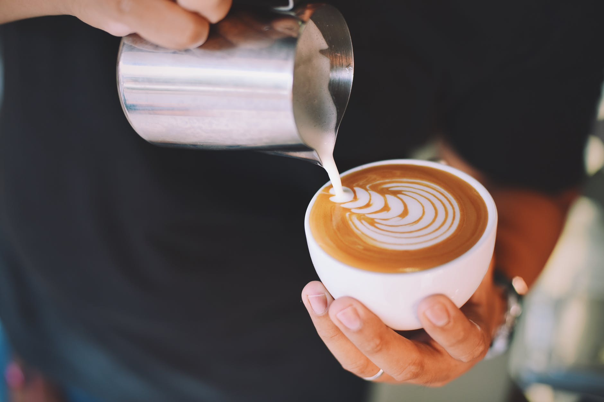
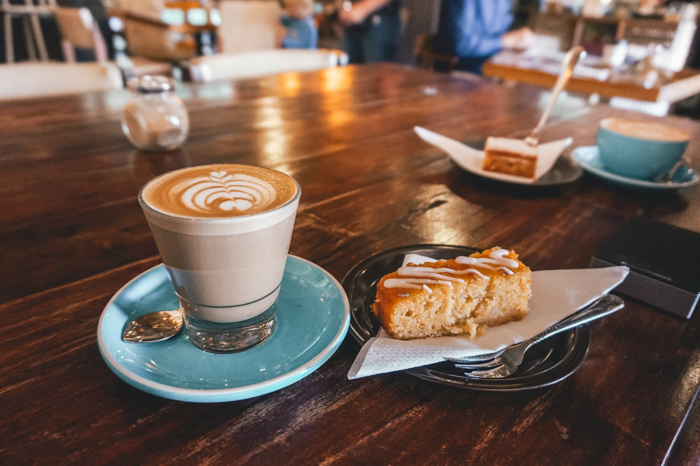

Our Coffee
At Urban Coffee House, our team of coffee connoisseurs has traveled throughtout the Tropics of Capricorn and Cancer and have tried some of the the finest coffee beans the world has to offer. We believe great coffee starts with the highest quality of unroasted green coffee beans. Every week our team roasts and cups numerous samples of single origin green coffee beans from the premium coffee growing regions around the world before settling on the handful that we deem worthy of roasting. Then we roast them to perfection, bringing out the best qualities of each coffee so that the complex flavors and subtle notes of each coffee can be enjoyed to their fullest.

What we offer
- Aromaticly Brewed Coffee
- Freshly Baked Pastries
- Perfectly Steeped Tea
- Complimentary WIFI
- Homestyle Desserts
- Relaxed Ambience